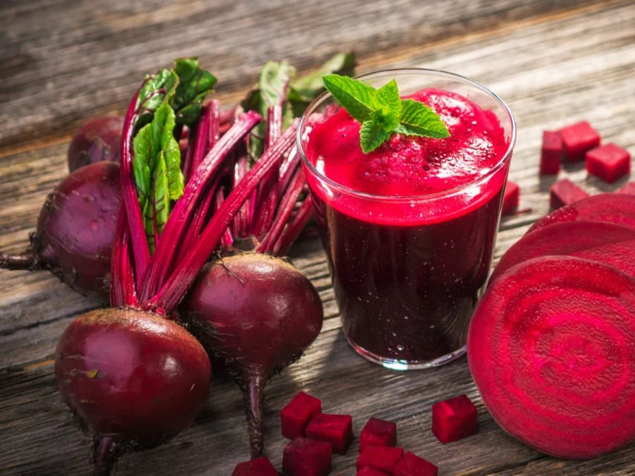
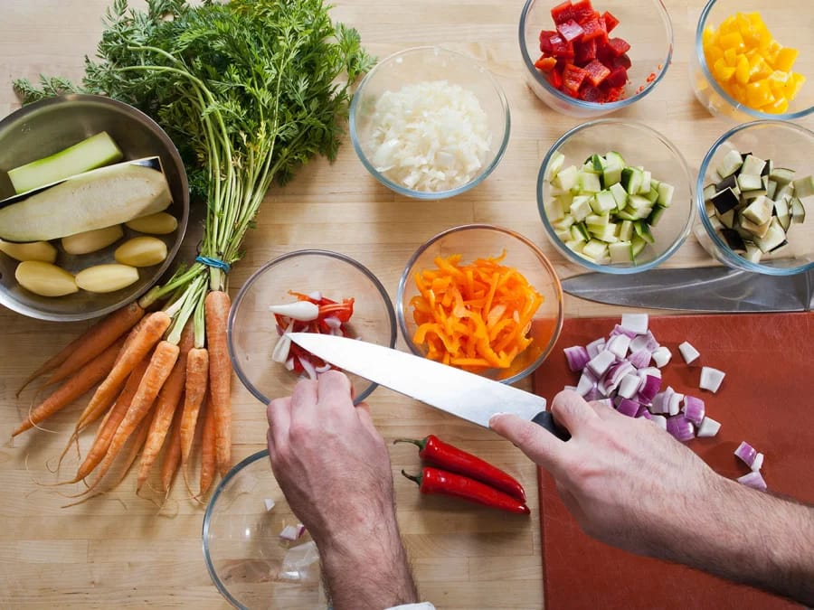
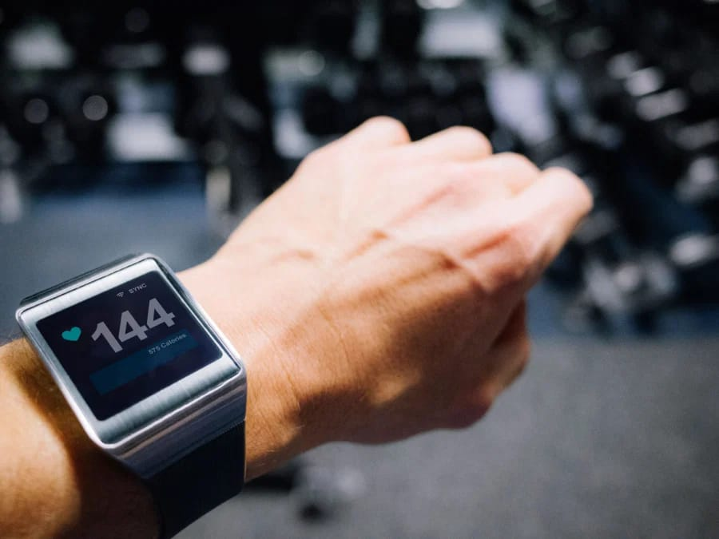

Fitness
1. Make sure you're eating healthy
Ask almost any personal trainer and they’ll tell you that regardless of your training goals, healthy eating is the backbone. Food is what fuels your body to reach your goals, and without proper nutrition through quality foods, you’re likely to stall. Maintain a balanced diet consisting of fruits, vegetables, complex carbohydrates, complete proteins, and healthy fats like fish oils and flaxseeds.

2. Prepare ahead
Preparing meals in advance gives you the best chance to accomplish your nutrition goals, says Micah LaCerte, a personal trainer and fitness competition world champion. That way, he says, you won’t feel pressured to eat unhealthy foods or skip meals. Check out 10 of our favorite simple meal-prep recipes.
3. Eat more clean food
Eating only three daily meals? Not a great idea. “Half the people I deal with aren’t losing weight because they don’t eat enough,” says veteran personal trainer Mike Duffy. Duffy advises his clients “to eat five times a day, about every three hours, to stimulate their metabolism” including two mini-meals between three basic meals. With activity levels decreasing throughout the day, he advises to “eat less as the day goes on.”

4. Control your portion sizes
You’ll be eating more often, so paying attention to portions is extremely important. “Make sure chicken breasts, (and) meats, are no larger than your palm, and that pastas are no larger than your fists,” says Jay Cardiello, a personal trainer to countless celebrities and professional athletes. He also suggests using “smaller bowls, plates, and cups” because studies show people “serve themselves 20-40% more food when they’re using larger plates.” Here’s how to estimate portion sizes.
5. Eat with purpose
Everything you consume should have substantial nutritional value. “You want the most nutritional bang for your buck,” says Dan Trink, C.S.C.S., a strength coach and trainer. “Everything you eat should serve some sort of nutritional purpose in your body, fuel your workouts, and (be) geared toward optimizing your body.”
6. Understand the basics of building muscle
Talk to any personal trainer and they’ll tell you there are certain muscle-building basics. First, increase your caloric and complete protein intake, so your body has enough building blocks to get bigger. Then, when you enter the gym, focus on your form. Perform compound movements and train with weights on average around four times a week. Never underestimate the importance of rest. Remember, muscle tissue grows outside of the gym when you’re giving your body time to relax and recover following your workouts.
7. Work your full range of motion
Don’t take any shortcuts. “Aim for the largest range of motion you can achieve in your exercises,” says Lee Boyce, C.P.T. “Your muscles will do more work per rep, and it will result in your breaking down more tissue by the end of the workout.”
8. Carefully consider cardio
9. Choose supplements intelligently
Some trainers and lifters feel supplements can play a key role in boosting muscle gains. If you subscribe to that theory, then chances are, you’re already taking protein supplements—but what else? Creatine, for one, “seems to be about the most effective strength- and size-building supplement,” Trink says. To boost your performance, you may also want to try peppermint. Cardiello explains that the scent “alters the perception of how hard you’re working out,” making it seem “less strenuous, slower-paced, and easier to complete.”
10. Heart rate monitor
If you already own a heart rate monitor or fitness tracker, then this is a good time to start using it. If not, you may want to either go out and buy one, or learn how to do it yourself. “Don’t just exercise for a set amount of time and call it quits,” Duffy says. “You need to bring the intensity with it, and a fitness tracker can help you get a sense of exactly how hard your heart is working.”
